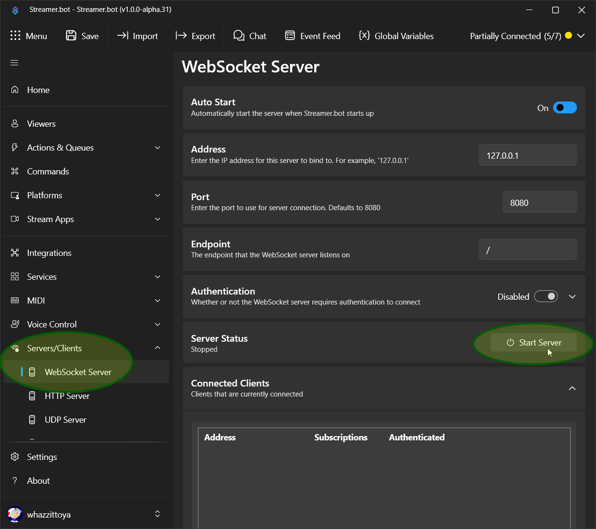

Streamer.bot Extension Configurator
Enter your Streamer.bot WebSocket Server details below
Why Are You Seeing This Screen?
This page is unable to connect to your Streamer.bot's websocket server, so that it can access and update extension configuration.
How Do You Fix It?
Step 1: Make Sure the Server Is Running
In Streamer.bot, go to the "Servers/Clients" > "WebSocket Server" tab, and press "Start Server". Then press the "Connect" button above.

You probably also want to check "Auto Start WebSocket Server", so it runs next time you start Streamer.bot.
Step 2: Verify The WebSocket Settings
If the server is running, but it still won't connect, make sure all of the settings above match Streamer.bot's server settings:
- Address, Port, Endpoint: should match exactly.
- Password: If "Authentication" is Enabled and a Password is set in Streamer.bot, then enter that same password here.
- Secure Connection: This is only for special situations when you have to use wss or https to tunnel to a remote streamer.bot. You're unlikely to need this, and if you do, you probably don't need this help anyway.
After updating any necessary settings, press the "Connect" button again.
Step 3: Reload
If you are sure the server is running, and the settings are correct, try reloading the page - it might just be stuck between connection attempts.
Still not working?
Visit the
Web Configurator Github page for more information, including how to contact the author for help.